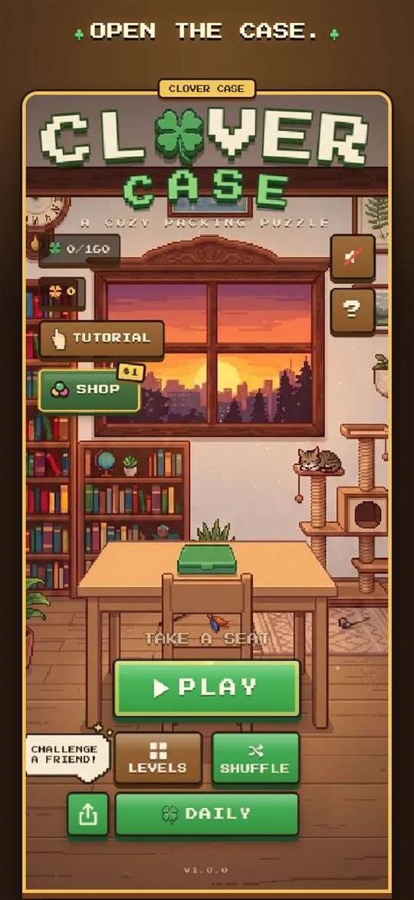
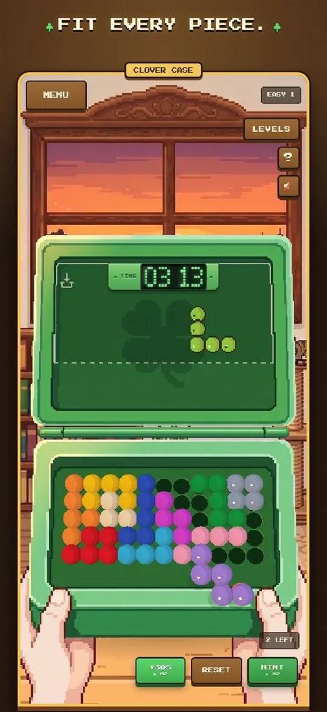
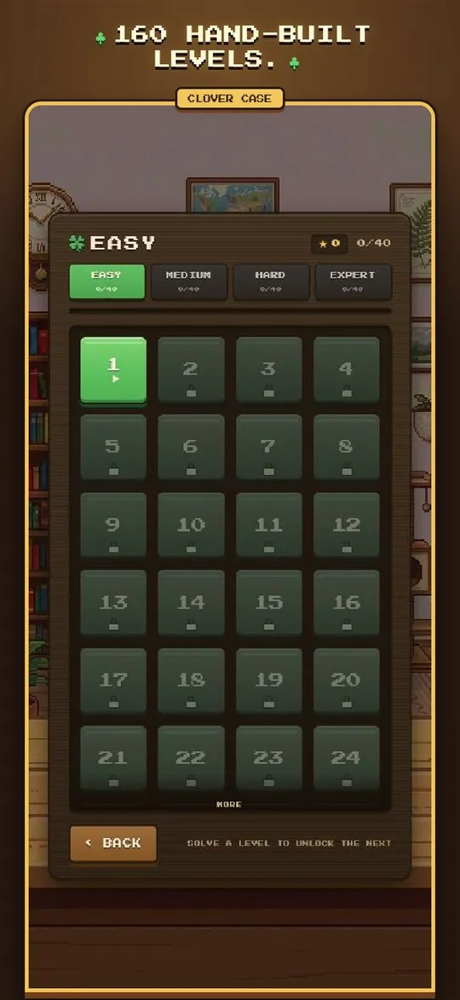
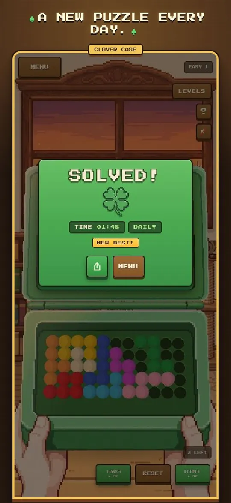
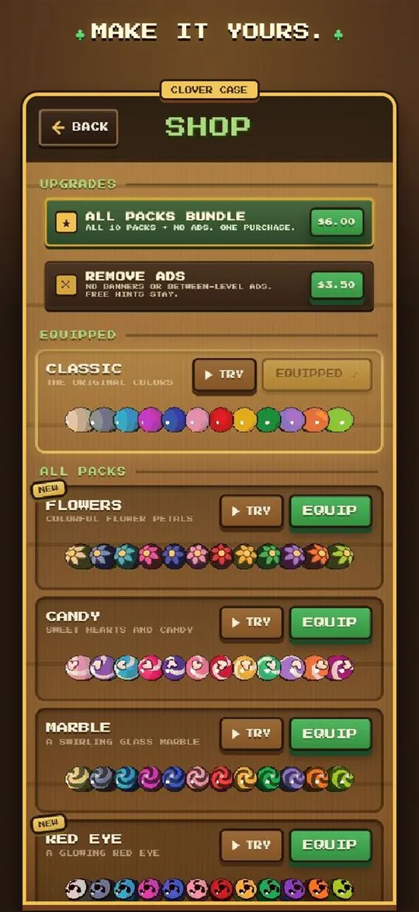

Clover Case
A cozy ball-piece packing puzzle for iPhone, in the spirit of Kanoodle.
Pick up chunky bead pieces, turn and flip them with one finger, and snap every shape into the molded board of a little green travel case. If you grew up with Kanoodle or other ball-and-polyomino puzzles, you'll know what to do right away. Clover Case then takes the idea further with 160 levels, new board shapes and a puzzle that's the same for everyone each day.





What's in the case
- 160 handcrafted levels in four difficulty books, from a gentle first fit to expert boards.
- Three board shapes: the classic rectangle, plus triangle and hexagon cases.
- A daily challenge: every player gets the same puzzle, with a daily leaderboard.
- Hints when you're stuck, and a timer for when you want pressure.
- 10 optional ball styles and case skins.
- Plays offline, no account needed. Free, with a one-time purchase to remove ads.
- Available in English, Turkish, German, French, Spanish, Portuguese and Japanese.
Questions
Is there a Kanoodle app for iPhone?
There's no official Kanoodle app that we know of, but Clover Case is built around the same idea: chunky ball pieces that you rotate, flip and fit into a board. It's free, with 160 levels and a daily challenge.
What's a good game like Kanoodle?
If you like Kanoodle, try Clover Case. It's a packing puzzle where bead-style polyomino pieces fit into a case. Levels go from relaxing to genuinely hard, and there's a new puzzle every day.
Can I play a Kanoodle-style puzzle on my phone for free?
Yes. Clover Case is free on the App Store. It shows optional ads, which a one-time purchase removes.
Is Clover Case the official Kanoodle game?
No. It's an independent game by a solo developer and isn't affiliated with Educational Insights, which owns the Kanoodle trademark.
Is it good for kids?
Yes. It's rated 4+, has no chat or accounts, and the easy levels are a gentle way to build spatial reasoning. The expert levels are hard enough for adults.
Does it work offline?
Yes. All 160 levels play offline. Only the daily leaderboard needs a connection.
Support
For help, feedback or bug reports, email atakankartli@gmail.com.